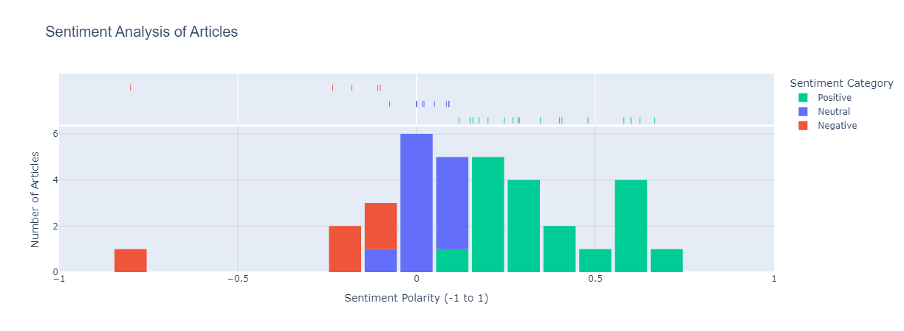

Advanced Text Analysis using NLP: Sentiment Analysis, Named Entity Recognition (NER) & Topic Modeling (LDA)
Extracting emotional tone, entities, and topics from unstructured textual data
This project analyzes a dataset of articles stored in data/Text.csv to uncover insights through various text analysis techniques: Word Cloud, Sentiment Analysis, Named Entity Recognition (NER), and Latent Dirichlet Allocation (LDA) Topic Modeling. The analysis was performed using Python in a Jupyter Notebook environment with libraries like pandas, spacy, textblob, plotly, wordcloud, and scikit-learn.
Dataset Overview
The dataset (data/Text.csv) contains articles with titles and text content. A preview of the first few rows:
| Article (Excerpt) |
Title |
| Data analysis is the process of inspecting and... |
Best Books to Learn Data Analysis |
| The performance of a machine learning algorith... |
Assumptions of Machine Learning Algorithms |
| You must have seen the news divided into categ... |
News Classification with Machine Learning |
| When there are only two classes in a classific... |
Multiclass Classification Algorithms in Machine... |
| The Multinomial Naive Bayes is one of the vari... |
Multinomial Naive Bayes in Machine Learning |
- Encoding: Loaded with
latin-1 encoding.
- Size: Contains 34 articles (based on sentiment analysis count).
Analysis Techniques and Findings
1. Word Cloud
A word cloud was generated to visualize frequent terms in article titles.
- Key Words: recorder, frameworks, stock, apis, multinomial, values, resources, apple, deep, computer, networks, assumptions, bayes, prediction, analysis, best, health, applications, news, machine, learning, clustering, insurance, introduction, learn, classification, algorithm, python, data, sentiment.
- Insights: Focus on machine learning and data science with terms like
machine, learning, data, python.
2. Sentiment Analysis
Performed using TextBlob on the Article column.
- Mean Sentiment: 0.16 (slightly positive)
- Category Distribution:
- Positive: 18 (52.9%)
- Neutral: 11 (32.4%)
- Negative: 5 (14.7%)

Conclusion: The articles are predominantly positive or neutral, suggesting an informative tone.
3. Named Entity Recognition (NER)
Performed using spaCy to identify and count named entities in the articles.
- Top Entities: today, Machine Learning, one, September, Instagram, Pfizer, Apple, the K-Means, Data Scientist.
- Entity Types: Temporal, numerical, companies/products, and technical terms.
4. LDA Topic Modeling
LDA was used to identify 5 topics from the articles.
- Topic 1: learn, python, insurance, application...
- Topic 2: algorithm, python, learning, classification...
- Topic 3: analysis, sentiment, want, data...
- Topic 4: news, category, machine, website...
- Topic 5: clustering, stock, deep learning...
Insight: Overlapping ML-focused vocabulary across topics, diverse application areas.
Key Findings
- Theme: Articles revolve around machine learning, Python, classification, and data analysis.
- Tone: Mostly positive or neutral.
- Entities: Include technical terms and company/product names.
- Topics: Tutorials, sentiment/news analysis, deep learning, and applications.
Methodology
- Tools: Python,
pandas, spacy, textblob, wordcloud, plotly, scikit-learn
- Preprocessing: Lemmatization, stopword/digit removal for LDA
- Visualizations: Word Cloud, Plotly with Viridis color scheme
Usage
- Install dependencies:
pip install pandas spacy textblob wordcloud plotly scikit-learn
python -m spacy download en_core_web_sm
- Place
Text.csv in the data/ directory
- Run the notebook and explore Plotly charts
Future Work
- Expand dataset for richer insights
- Fine-tune topic modeling parameters
- Enhance sentiment analysis with subjectivity
- NER filtering by entity types (PERSON, ORG, etc.)
Author
Author: Pavan Yellathakota
Date: FEB 2025
Contact Information